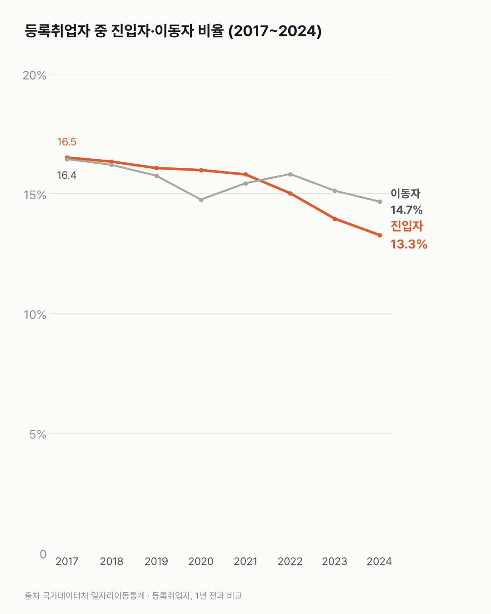
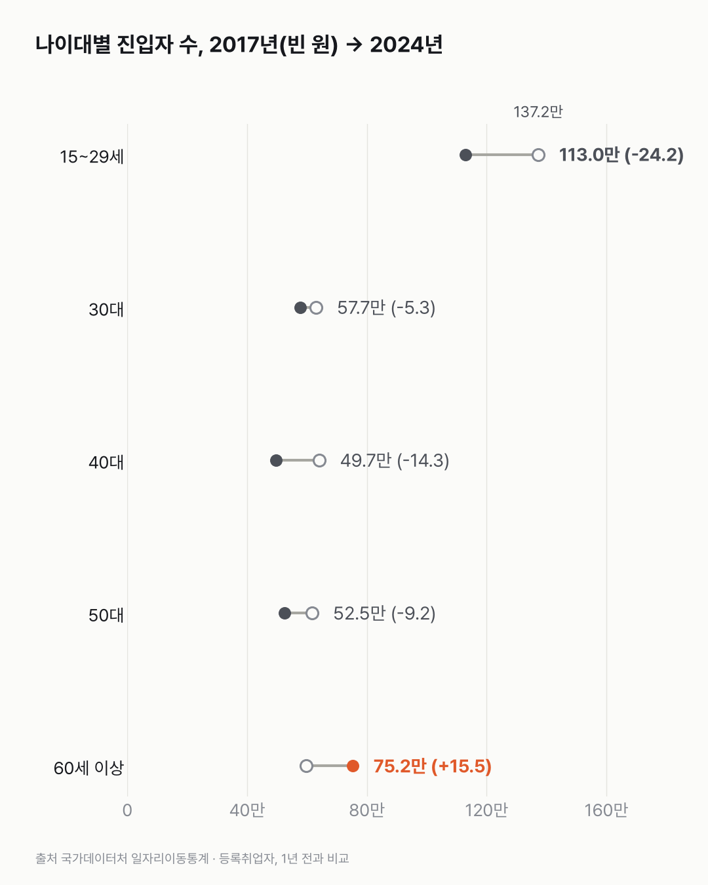

새 일자리를 얻은 사람, 2017년 이후 가장 적었어요
새로 들어오는 사람은 줄고, 같은 일자리에 머문 사람은 늘었어요. 나이대 가운데 60세 이상만 반대로 움직였어요.

3줄 요약
- 2024년 새로 일자리를 얻은 사람은 348.2만 명이에요. 행정자료로 잡힌 취업자의 13.3%로, 2017년 이후 가장 적어요.
- 15~29세는 2017년 137.2만 명에서 2024년 113.0만 명이 됐어요. 2024년 한 해에만 7.3만 명이 줄었어요.
- 새로 일자리를 얻은 사람이 늘어난 나이대는 60세 이상뿐이에요. 59.7만 명에서 75.2만 명이 됐어요.
진입자는 1년 전엔 등록된 일자리가 없다가 올해 생긴 사람을 말해요. 학교를 마치고 처음 일을 잡은 사람도, 쉬다가 다시 일을 시작한 사람도 여기에 같이 들어가요. 그래서 보도에서 말하는 신규채용과 딱 맞는 숫자는 아니에요. 이 기준으로 2017년엔 385.7만 명, 등록취업자의 16.5%가 진입자였어요.
그 사이 같은 일자리에 남은 유지자는 67.1%에서 72.1%가 됐어요. 일자리를 옮긴 이동자는 16.4%에서 14.7%(384.8만 명)로 내려왔어요. 들어오는 사람도, 옮기는 사람도 줄었어요.
청년 칸만 따로 떼어 봤어요. 15~29세 진입자는 2017년보다 24.2만 명 적어요. 15~29세 등록취업자 가운데 진입자 비율도 35.0%에서 31.0%가 됐어요.
60세 이상은 반대였어요. 59.7만 명에서 75.2만 명으로, 진입자가 늘어난 나이대는 여기뿐이에요. 40대는 64.0만 명에서 49.7만 명이 됐어요.

같은 일자리에 머문 사람이 늘어난 해, 새로 들어오지 못한 사람들은 어디에 있었을까요? 등록 일자리 바깥은 이 표가 세지 않더라고요.
이 숫자는 어디서 왔나요
출처
기준일 2017~2024년이에요. 그해와 1년 전을 비교한 결과예요.
국가데이터처일자리이동통계
- 성별·연령별 일자리 이동KOSIS DT_1JTJ_A001원본 보기
1년 내 진입·유지·이동·미등록, 나이대별, 2017~2024
어떻게 셌나요
- 설문이 아니에요. 사회보험·과세 같은 행정 자료로 일자리가 잡히는 사람(등록취업자)을 세는 통계예요.
- 등록취업자는 세 무리로 나뉘어요. 진입자는 1년 전엔 등록된 일자리가 없다가 올해 생긴 사람, 유지자는 같은 일자리에 그대로 있는 사람, 이동자는 다른 일자리로 옮긴 사람이에요.
- 진입자에는 첫 취업뿐 아니라 다시 일을 시작한 사람도 들어가요. 그래서 보도의 '신규채용'과 꼭 같지는 않아요.
- 나이는 그해 기준이에요. 나이대 인구가 줄면 진입자 수도 줄 수 있어서, 진입자를 등록취업자로 나눈 비율도 함께 봤어요.
한계 4가지
이 데이터로 말할 수 없는 것
- 진입자 수는 나이대 인구 크기에 따라 움직여요. 20대 인구는 줄고 60세 이상은 늘었어요(65세 이상 취업자 글 참고: 65세 이상 취업자).
- 등록 자료에 안 잡히는 일(일부 특고·플랫폼 노동 등)은 빠져요.
- 이직한 사람의 임금 변화는 이직 전후 임금 글에서 다뤘어요.
- 원인은 이 데이터로 알 수 없어요.
새 글 나오면 받아 보기
피드 리더 앱에 이 사이트 주소를 한 번 넣어 두면, 새 글이 올라올 때 앱에 떠요. 가입이나 메일 주소는 필요 없어요.
받는 법 보기
- 피드 리더 앱을 하나 골라요. 새 글을 모아 보여 주는 앱이에요. 예를 들면 Feedly나 Inoreader가 있어요. 둘 다 무료고 웹·휴대폰에서 써요.
- 앱에서 '구독 추가'(+)를 누르고 아래 주소를 붙여 넣어요.
- 끝이에요. 새 글이 올라오면 앱 목록에 떠요.
https://protofu.github.io/opendata-insight/feed.xmlFeedly를 쓴다면 여기를 눌러 바로 추가할 수도 있어요.